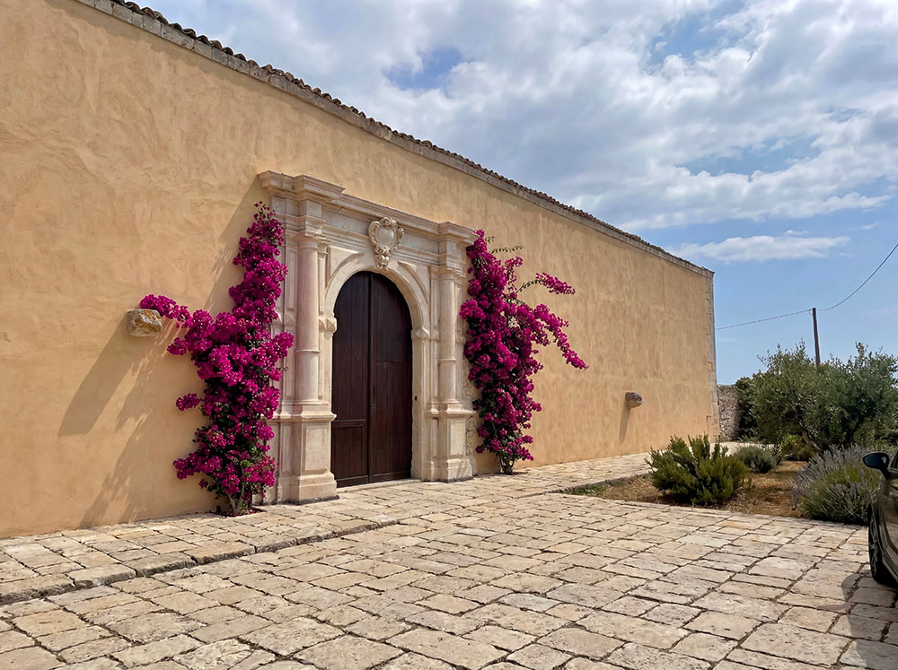
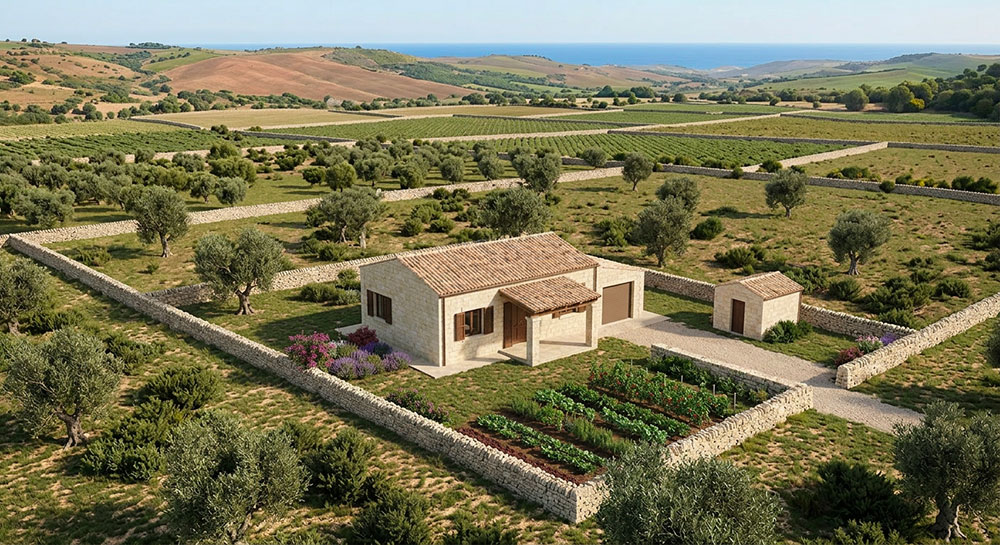

Una comunità intenzionale
radicata nella tradizione e nella cultura siciliana
radicata nella tradizione e nella cultura siciliana
Come far parte del progetto

Una comunità intenzionale stabile per famiglie e professionisti che cercano un ritmo di vita più umano, radicato nella tradizione siciliana, nella cura delle relazioni e nella trasmissione di valori.
Scopri come si vive →
Un’operazione immobiliare con identità forte, governance chiara e clausole anti-speculative. Un investimento concreto in beni reali, con rendimenti stabili e valore patrimoniale duraturo.
Scopri l’investimento →Il progetto prevede due tipologie di abitazioni, pensate per esigenze diverse ma unite dalla stessa visione di comunità e qualità della vita.

14 unità ricavate dal restauro filologico della masseria fortificata del XVI secolo. Ogni appartamento mantiene le caratteristiche architettoniche originali e beneficia degli spazi comuni del Baglio.

45–65 m² • Ideali per coppie o single. Accesso diretto dal cortile, spazi funzionali e luminosi.

80–105 m² • Perfette per famiglie. Possibilità di soppalco in legno e maggiore flessibilità degli spazi.

105–115 m² • Unità di prestigio con forti caratteristiche storiche e posizione privilegiata all’interno del Baglio.

20 nuove abitazioni in pietra iblea tradizionale, distribuite sui terreni della masseria. Ogni casa colonica sarà dotata di un lotto privato di circa un ettaro, con orto, giardino e frutteto.

140–160 m² • Soluzione essenziale e funzionale con lotto privato e possibilità di orto.

200–220 m² • Ampia e confortevole, ideale per famiglie numerose o chi desidera più spazio.

240–260 m² • Versione più ampia e panoramica, con vista privilegiata sul territorio ibleo.
Il Baglio San Michele è nato per offrire un’alternativa concreta in tempi di grande incertezza: un luogo dove le famiglie possano mettere radici profonde, crescere i figli in sicurezza e bellezza, coltivare relazioni autentiche e contribuire a una comunità viva, radicata nella fede e nella tradizione siciliana.